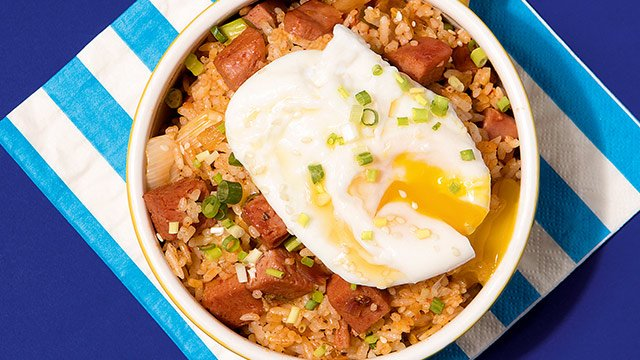

Fried Rice

Description
Fried rice is a dish of cooked rice that has been stir-fried in a wok or a frying pan and is usually mixed with other ingredients such as eggs,
vegetables, seafood, or meat.
Ingredients
The ingredients listed below are for making kimchi fried rice.
- 3 bowls of steamed rice
- 1 cup of chopped kimchi
- 1/4 cup of kimchi juice
- 6 oz of spam, diced
- 1 egg
- 1/2 onion, diced
- 1 green onion, chopped
- 1 tablespoon of vegetable oil
- 1 tablespoon of sesame oil
- 1 tablespoon of sesame seeds
Preparation
- Heat up a pan and add the vegetable oil.
- Add the onions and cook until they start to brown.
- Add the kimchi and spam. Continue frying for 1-2 minutes.
- Remove the contents onto a plate and add an egg into the pan.
- Break up the egg and cook for 1 minute. Then add the rice, kimchi juice, and water into the pan. Stir fry for about 5 minutes.
- Add the previous contents into the pan and mix thoroughly.
- Add sesame oil and turn off the heat.
- Sprinkle in the green onions and sesame seeds.
- Enjoy!